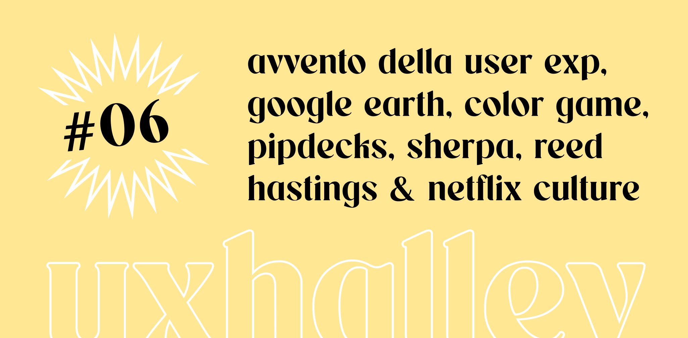

UX Halley, newsletter per designer
uxhalley, edizione #06
19 dicembre 2022 — UX Halley: una newsletter bisettimanale che raccoglie news e links utili sulla UX. Un progetto dell'ecosistema The UX North Star, insieme al libro, al file UX Antimateria e a breve al podcast inedito. Le regole sono semplici: 5 minuti di lettura per link utili e news dal mondo della UX. Se ti interessa, lo approfondisci. Se ti piace, lo condividi. Facile facile.
Immagine di copertina dell'edizione di UX Halley, newsetter per designer
Link per designer suggerito nell'edizione di UX Halley, newsletter per designer
l'avvento di Figma
Da Figma sono veramente dei simpaticoni e ogni giorno ne rilasciano una nuova. Dopo aver finalmente rilasciato il check automatico sulla grammatica e sui testi (addio typo), se ne escono con un file, piccolo ma divertente, che è a tutti gli effetti un calendario dell'avvento per designer. 10 giorni, 10 consigli, tutti da scartare (uno al giorno! non barare).
Link per designer suggerito nell'edizione di UX Halley, newsletter per designer
il codice da un miliardo di dollari
Di storie assurde se ne sentono tante ma questa, credimi, è veramente incredibile. Google ha rubato l'idea di Google Earth ad un gruppo di designer e sviluppatori visionari di Berlino, tra gli anni 90 e 2000. Praticamente te l'ho spoilerato tutto, ma è una storia che probabilmente nel futuro si leggerà sui libri di scuola. Ora che lo sai, vuoi scoprire come è andata esattamente e conoscerne i dettagli?
Link per designer suggerito nell'edizione di UX Halley, newsletter per designer
un gioco sui colori
Il gioco perfetto per rimanere lucidi dopo il pranzo del 25 e smaltire la lasagna, oppure per chi ha più coraggio da fare nelle prime ore del nuovo anno con il vino che scorre nelle vene. Un gioco che però contiene una vera chicca: nella pagina di partenza (che trovi al link sotto) c'è un sistema, sicuramente "grezzo", per calibrare il tuo schermo e migliorare l'aspetto dei colori (non in modo scientifico o tecnicamente perfetto, ma comunque dignitosamente valido).
Link per designer suggerito nell'edizione di UX Halley, newsletter per designer
mentorship natalizie
Hai detto mentor? Se si parla di mentor, nel mondo del design a 360°, non si può non parlare di adplist.org: una community di designer mondiale che mette a disposizione il proprio tempo, gratuitamente (per la maggior parte dei casi), per offrire assistenza, supporto e training a chi ne ha bisogno. Sotto natale fatti un regalo, prenota una sessione di mentorship e non smettere mai di studiare!
Link per designer suggerito nell'edizione di UX Halley, newsletter per designer
sherpa discord
Nella precedente edizione ho parlato dell'importanza delle community, e volutamente ne parlo al plurale. Non esiste una community che prevale sulle altre, ma luoghi diversi, con persone diverse, regole diverse, in cui però poter fare la stessa cosa: confrontarti. In questa edizione natalizia di UX Halley ti presento Sherpa. Per il resto, lascio a te curiosare, entraci non te ne pentirai.
Link per designer suggerito nell'edizione di UX Halley, newsletter per designer
regali top per designer
5 mazzi di carte, veramente super premium, per organizzare workshop con qualcosa di fisico. Queste sono quelle cose che i designer guardano e sbavano, come un bimbo di fronte al negozio di caramelle. Magari non ti servono davvero, ma quanto sono belli?? Inoltre l'ultimo arrivato, in pre-ordine, è in collaborazione con l'autore del libro Laws of UX, una vera chicca. Mi ringrazi dopo per questo fantastico regalo di natale da farti, o farti fare.
Link per designer suggerito nell'edizione di UX Halley, newsletter per designer
l'unica regola è che non ci sono regole
Un collega di ufficio lo stava leggendo, ammetto che da bravo designer sono rimasto colpito dalla copertina rossa (e poi dicono che i colori non significano niente, -semicit). L'ho letto tutto di un fiato, nonostante fosse un libro bello lungo, poiché parla di argomenti molto interessanti: la storia di Netflix e di come viene gestita l'azienda, con racconti che vengono dall'interno tra successi e fallimenti, tra nuove regole o assenza di regole. Consigliatissimo come lettura sotto le feste.